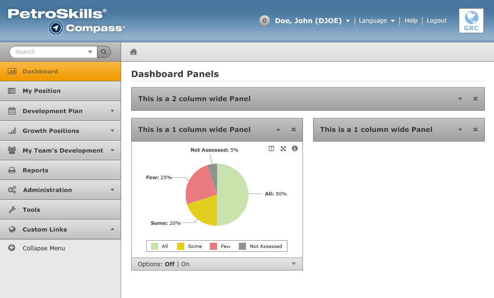
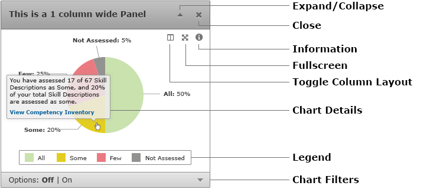
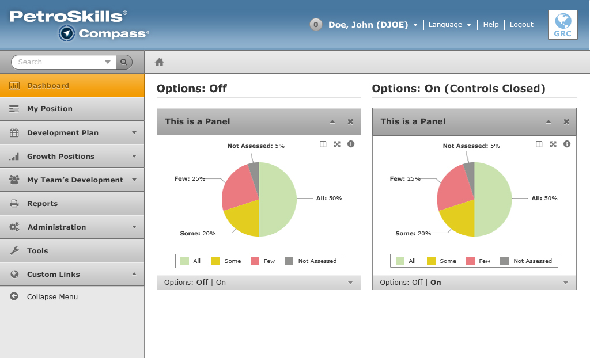
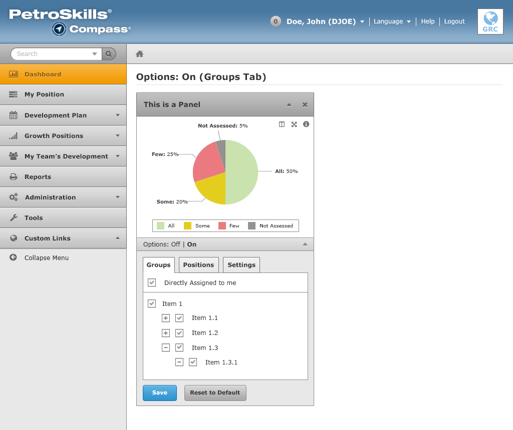

Charts
There are various charts displayed throughout the web application. One of the examples below showcases the Dashboard page.
Chart Panel

The chart includes many functionalities and information:
- Expand/collapse functionality. Minimize or open the chart as needed.
- Close. This will permanently remove the panel from the dashboard.
- Full view or split view. The chart can take up the whole width of the content area or split at 50%.
- Full screen functionality. A user can view the chart at a full screen resolution which takes up the entire browser window.
- Chart Details. When a user hovers over the chart, additional information is displayed via a tooltip.
- Legend shows the divisions of a pie chart by color.
- Chart Filters controls the data being displayed in the chart. Read below for more information on this feature.
Chart Filters
Chart Filters allow users to manipulate and control what data is displayed on the charts.

Chart Filters have an Off or On setting. The Off and On are labels (not links). When the setting is set to Off, it means that the chart displays default data. No custom settings will be set on the chart.
For the setting to turn On, users must fill out the form by clicking on the down arrow to open up the menu and hit the "Save" button. Once the data is saved successfully, the setting will turn On.
Once the setting is set to On, any custom settings that the user has made will be applied on the chart. The menu can be expand/collapse at any time.
For the setting to turn Off, users must click on the "Reset to Default" button and hit "Save". After saving, the setting will turn to Off.
Groups (tab)

This tab allows you to change what groups will be used for displaying data in the chart. It also allows you to select participants that are "Directly assigned to me".
Positions (tab)

This tab allows you to change what positions will be used for displaying data in the chart.
Settings (tab)

This tab is open or available to contain a form. More information will be available soon.